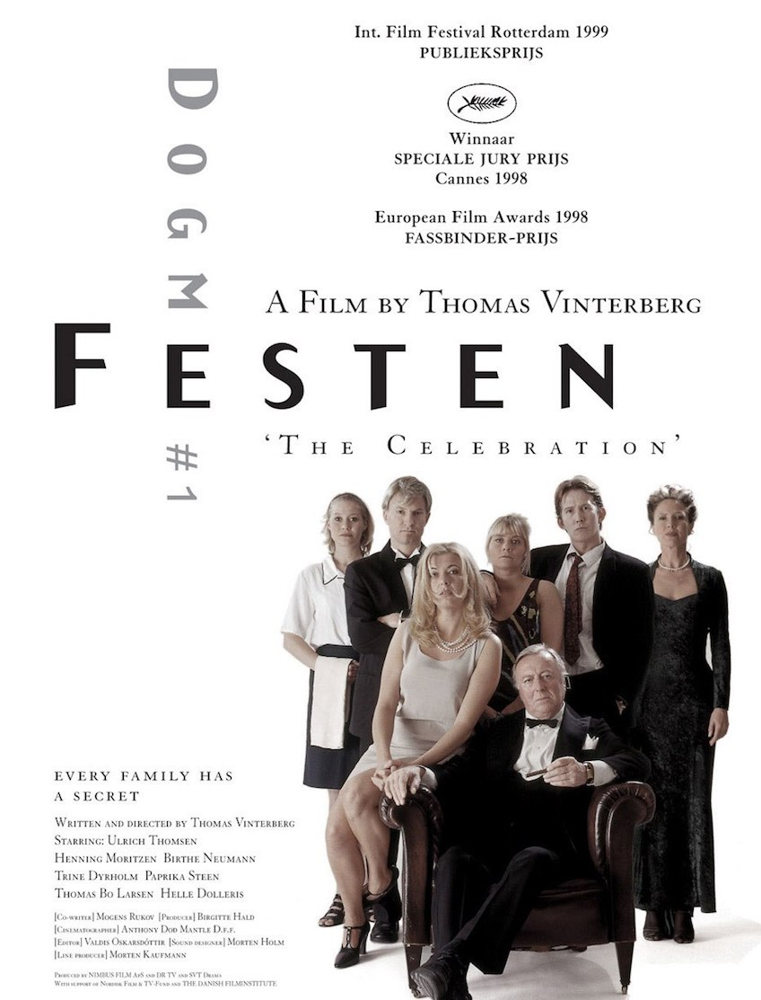
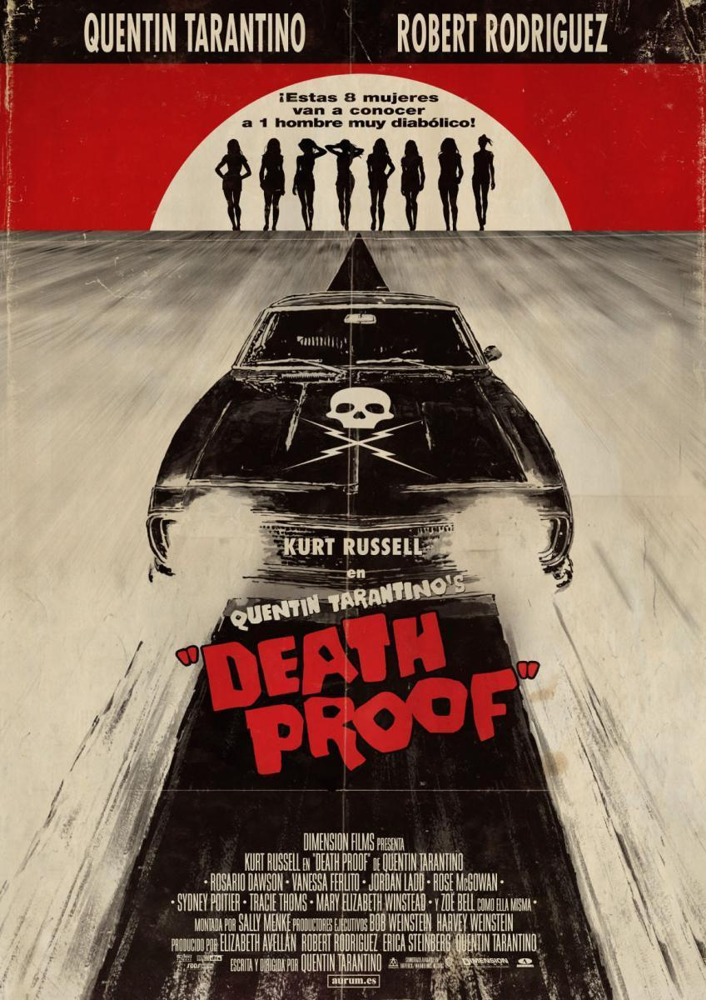
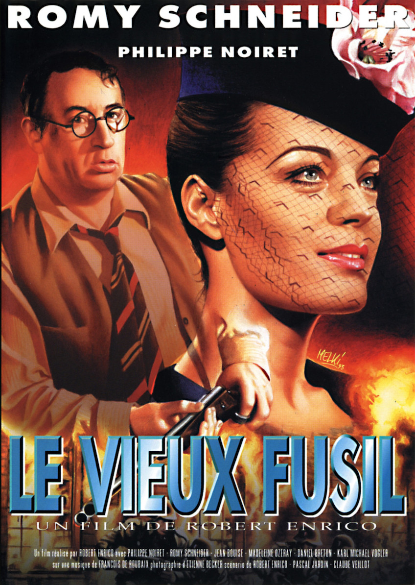
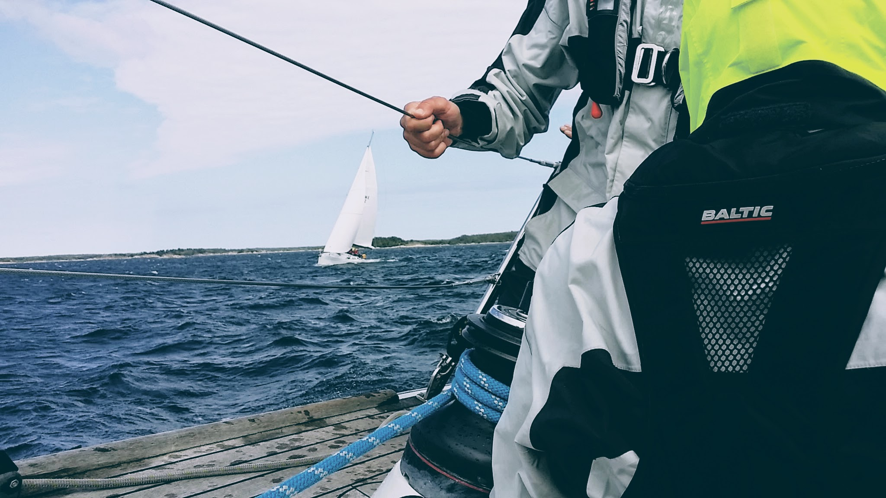

Films
|  |
FESTEN1998Tout le monde a été invité pour les soixante ans du chef de famille. La famille, les amis se retrouvent dans le manoir d'Helge Klingenfelt. Christian, le fils aîné de Helge, est chargé par son père de dire quelques mots au cours du dîner, sur sa soeur jumelle, Linda, morte un an plus tôt. Tandis qu'au sous-sol tout se prépare avec pour chef d'orchestre Kim, le chef cuisinier, ami d'enfance de Christian, le maître de cérémonie convie les invités à passer à table. Personne ne se doute de rien, quand Christian se lève pour faire son discours et révéler de terribles secrets. |
|  |
BOULEVARD DE LA MORT2007C'est à la tombée du jour que Jungle Julia, la DJ la plus sexy d'Austin, peut enfin se détendre avec ses meilleures copines, Shanna et Arlene. Ce TRIO INFERNAL, qui vit la nuit, attire les regards dans tous les bars et dancings du Texas. Mais l'attention dont ces trois jeunes femmes sont l'objet n'est pas forcément innocente. C'est ainsi que Mike, cascadeur au visage balafré et inquiétant, est sur leurs traces, tapi dans sa voiture indestructible. Tandis que Julia et ses copines sirotent leurs bières, Mike fait vrombir le moteur de son bolide menacant... |
|  |
Le Vieux Fusil1975L'action se déroule en 1944, à Montauban. Le chirurgien Julien Dandieu y mène une vie paisible avec sa femme, Clara, et leur fille Florence. Cependant, l'invasion allemande ne peut le laisser indifférent : préférant les savoir éloignées des tourments de cette guerre, Julien demande à son ami François de conduire Clara et Florence à la campagne, où cette famille possède un château, véritable forteresse médiévale qui surplombe un village. Une semaine plus tard, ne supportant plus l'absence des siens, Julien rejoint sa famille pour découvrir, avec effroi, que les Allemands ont déjà semé la terreur dans le village... |
|  |
SailingRacing and traveling on sail boats |

|
ClimbingTraveling with ropes |

|
Adventure cyclingExplore remote area on dirt roads www.LaRoueCoool.net |